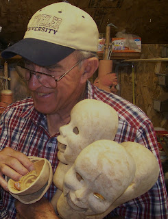

Detweiler University?
6/8/2010
{kind=link}
Periodically, when wearing my "Detweiler University" gear around town, someone will ask where the university is located. I tell them, "You're looking at it...the school of hard knocks and I'm a lifetime student!"
The lessons of life and living - you know what I mean. I'm now enjoying another such experience. You may remember the set of three unfinished "Clinton Detweiler heads" my son was selling on eBay. These were figures I started in the '80s but never finished. After gathering dust in my shop for several years, I gave them to Kevin to finish. But, like father, like son, he never finished them either. So, Kevin listed them for sale on eBay (with my permission). However, watching the auction progress, I found myself feeling a bit guilty, realizing someone else was going to finish my work...and perhaps a bit envious - just enough so that I placed my own bid to win the auction and redeem the heads! Maybe now
{kind=link}

that I have $255 invested in them, I'll be motivated to complete the jobs!This week's lesson learned at "Detweiler University"? "It is less costly to complete a job when started, than to postpone completion for 25 years!"
Or, as someone else has famously expressed, "Better late than never!"
* * * * * *
(P.S. "Happy birthday, Doneta!"